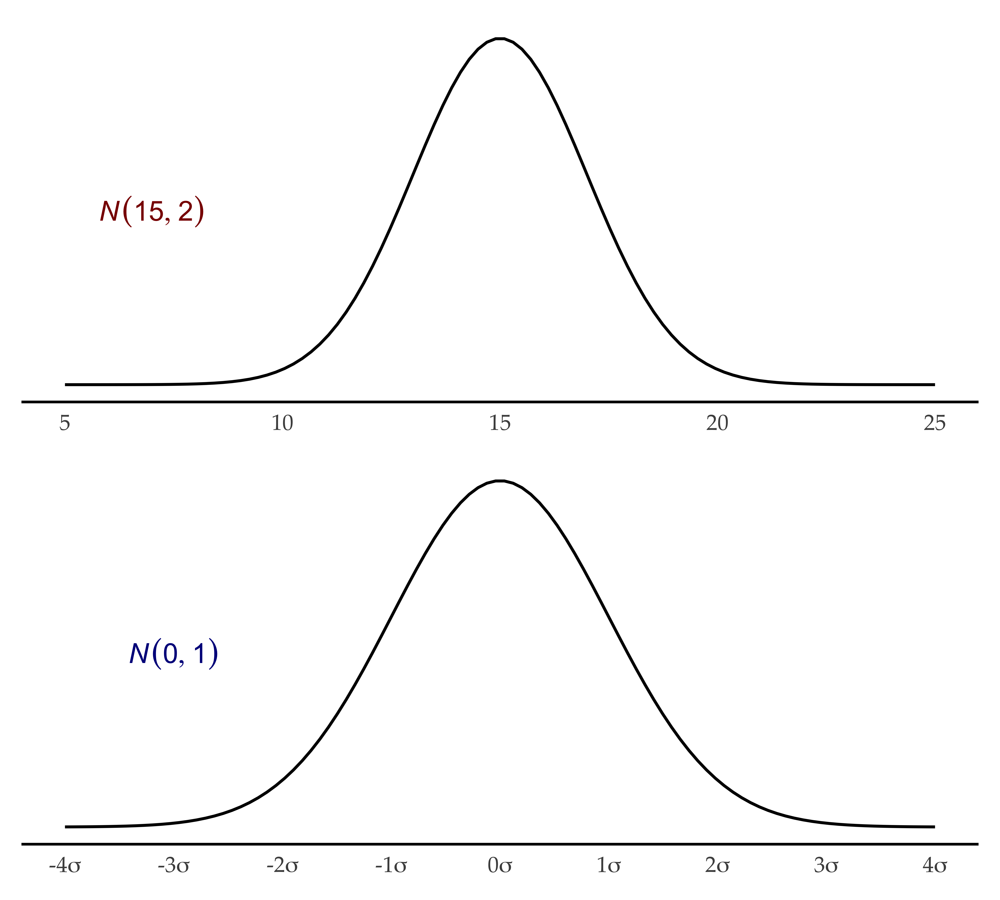
Data Science for Linguists
NHST
Joseph V. Casillas, PhD
Rutgers University
Last update: 2025-02-15
More about z-scores
More about z-scores
- The normal distribution is defined by a mean and SD: N(μ, σ)
i.e., “sample x follows a normal distribution with a mean of 15 and a SD of 2”: N(15, 2) - An important case of the normal distribution is the standard normal distribution (using z-scores): N(0, 1)
- Same characteristics as a non-standardized normal:
- 68% of the data fall within 1σ of µ
- 95% of the data fall within 2σ of µ
- 99.7% of the data fall within 3σ of µ
- Sum of area under the curve = 1
- Thus we can make probability statements about a sample distribution
Probability
- The total area under the probability density function = 1
- A portion of the area under the curve is = to some proportion of 1
- area = ratio = probability
- We can determine the probability of finding a value less than, greater than, or between a value of x
- We can make probability statements about our data if we standardize it and compare it with the normal distribution
- Let’s practice
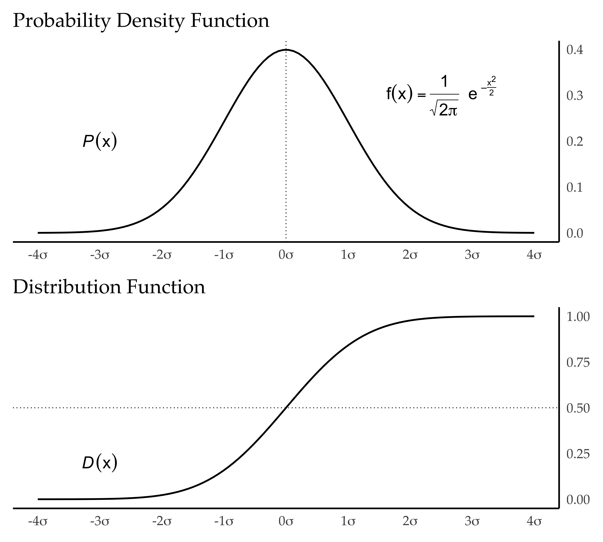
Probability
Test scores are N(80, 5)
- The shaded area in (1) is 0.5
- The ratio of students who scored 80 points or more is 0.5 (50%)
- If we randomly select one score from all students tested, the probability that the student’s score is 80 or more is 0.5 (50%)
If we standardize the scores: N(0, 1)…
- The shaded area in (2) is 0.5
- The ratio of students w/ a standard score of 0 or more is 0.5 (50%)
- When one student is randomly chosen from all students tested, the probability that the student’s standard score is 0 or more is 0.5 (50%)
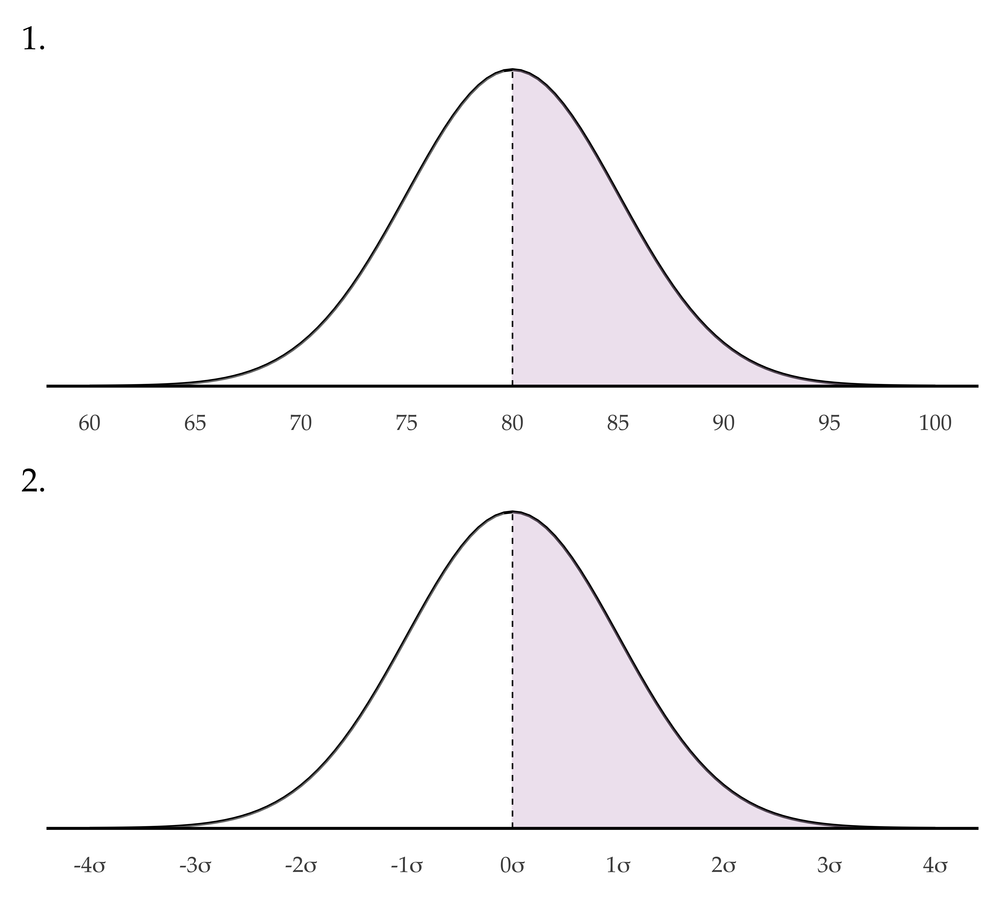
Probability
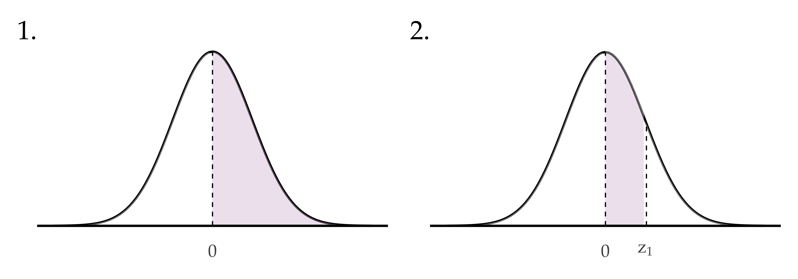- Since the total area under the curve is equal to 1 it follows from the symmetry in the curve that the area under the curve in the region x > 0 in (1) is equal to 0.5.
- In (2) the shaded area is the probability that \(Z\) takes values between 0 and \(z_1\).
- If we know \(z_1\) we can look for the value of the shaded area (the probability) in a z-table.
Probability What are the probabilities that \(Z\)…
- …takes values between 0 and 1.9?
- …takes values between 0 and 2
- …takes values between 0 and 2.33
- Find the probability that \(Z\) takes values bewteen 1 and 2.
- What is the probability that \(Z\) > 2?
- What is the probability that \(Z\) < 2?
- What is the probability that −2 < \(Z\) < 0?
- What is the probability that −1 < \(Z\) < 2?
Probability
1. What is the probability that \(Z\) takes values between 0 and 1.9?
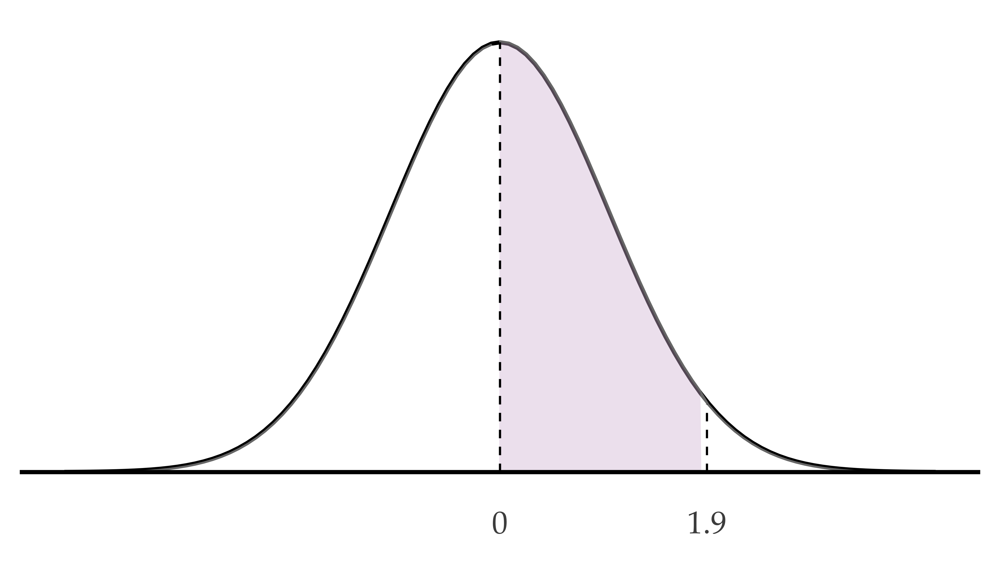The probability that \(Z\) takes values between 0 and 1.9 is
0.4712834
Probability
2. What is the probability that \(Z\) takes values between 0 and 2?
The probability that \(Z\) takes values between 0 and 2 is
0.4772499
Probability
3. What is the probability that \(Z\) takes values between 0 and 2.33?
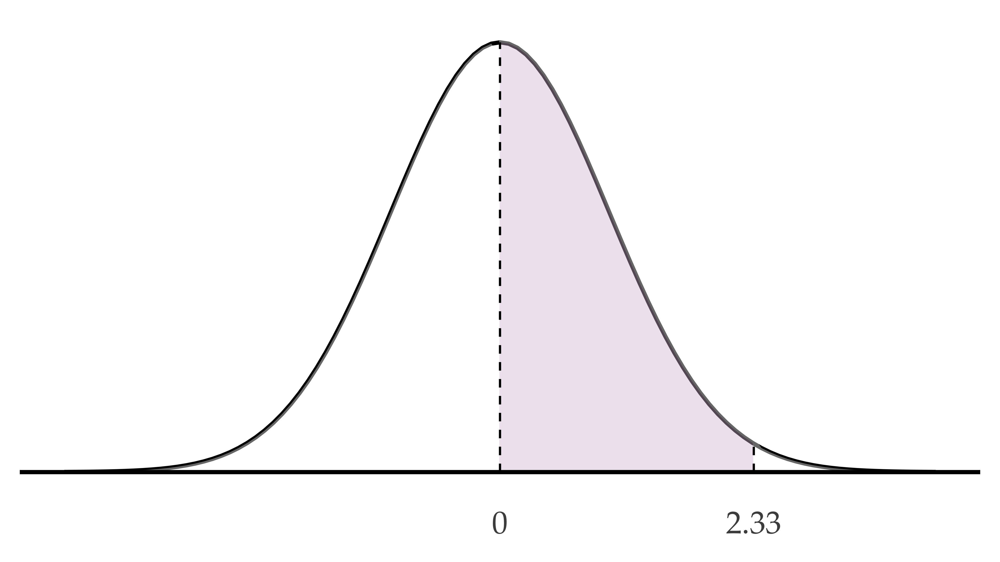The probability that \(Z\) takes values between 0 and 2.33 is
0.4900969
Probability
4. Find the probability that \(Z\) takes values bewteen 1 and 2.
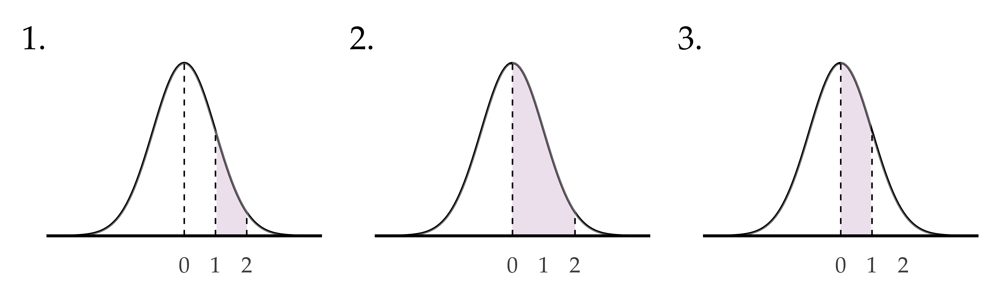The probability that \(Z\) takes values between 1 and 2 is
0.1359051
Probalitiy of (1) = (2) - (3)
Probability
5. What is the probability that \(Z\) > 2?
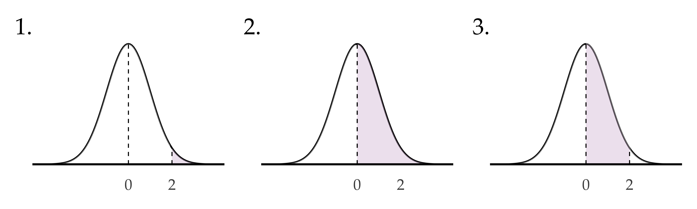The probability that \(Z\) > 2 is
0.0227501
Probalitiy of (1) = (2) - (3)
Probability
6. What is the probability that \(Z\) < 2?
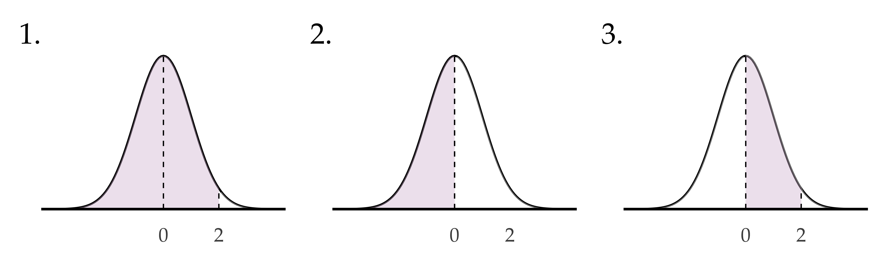The probability that \(Z\) < 2 is
0.9772499
Probalitiy of (1) = 0.5 + (3)
Probability
7. What is the probability that −2 < \(Z\) < 0?
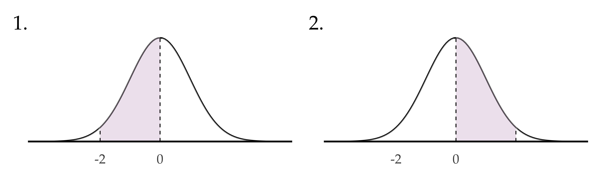The probability that −2 < \(Z\) < 0 is
0.4772499
Probalitiy of (1) = (2)
Probability
8. What is the probability that −1 < \(Z\) < 2?
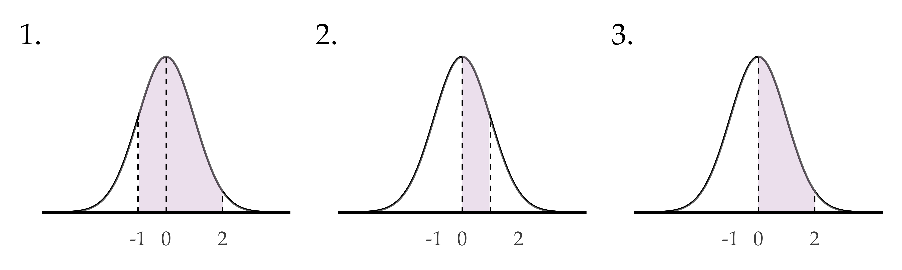The probability that −1 < \(Z\) < 2 is
0.8185946
Probalitiy of (1) = (2) + (3)
Central limit theorem
CLT
Huh?
…if you take many samples from a population, and calculate the averages of each one, the collection of those averages will be normally distributed… and it doesn’t matter what the shape of the source distribution is.
CLT Why is this important/useful?
- If we know the population mean and standard deviation, then we also know that the distribution of means across repeated samples will be normal with a mean equal to the population mean and a standard deviation equal to the population standard deviation divided by the square root of n.
- The CLT allows us to make probability statements about the possible range of values a sample mean can have
- Because we know exactly what the distribution of means will look like for a given population, we can take the mean from a single sample and compare it to the sampling distribution to assess the likelihood that our sample comes from the same population.
- In other words, the CLT allows us to test the hypothesis that our sample represents a population distinct from the known population.
Ex 1 - IQ
Ex 1 - IQ
The population distribution of IQ in the general public is known to have a mean of 100 with a standard deviation of 15.1

Ex 1 - IQ
- We take a sample of 36 members of the Trump family and would like to determine if these individuals are systematically smarter than the rest of the population.
- To answer this question, we calculate the mean for our sample and consider how likely it would be to observe this value if the Trumps were actually not any different (the null hypothesis).
- The sample mean IQ we observe is 103. We know that, even if the Trumps were not any different from the general public, we still might observe a 103 due to random chance.
- Let’s test it.
Ex 1 - IQ
- Given the central limit theorem, we know that the distribution of sample means will be normal with a mean of 100 and a standard deviation of
15 / sqrt(36)= 2.5. - We can compare our own mean to this distribution as follows:
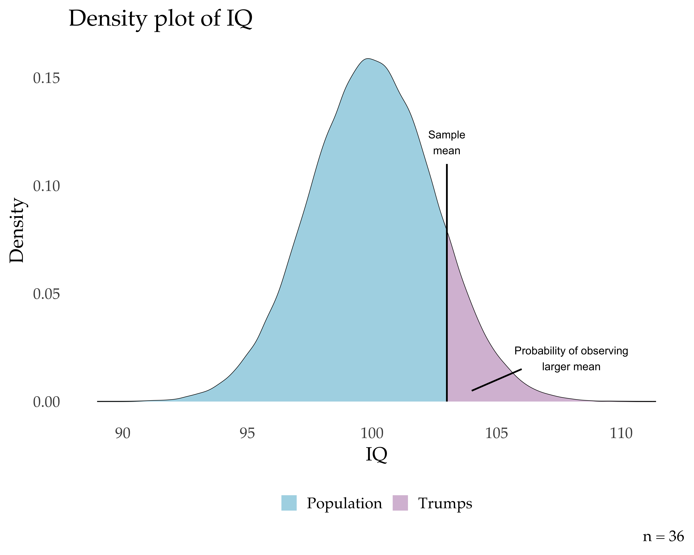
Ex 1 - IQ
- If the probability of observing our Trump sample mean or something larger is really small (let’s say less than .05), then we can reject the hypothesis that the Trumps are just like the general public.
- This probability will be equal to the area under the normal curve above our observed sample value, indicated by the blue color in the plot.
- To simplify the process of finding the area in the tail of the distribution, we typically convert our mean to a z-score as follows:
\[\color{red}{z} = \frac{\color{blue}{\bar{x}} - \color{green}{\mu}}{\color{purple}{\sigma} \div \color{orange}{\sqrt[]{\color{grey}{n}}}}\]
Where z is derived by calculating the difference between the sample mean and the population mean and dividing it by the population standard deviation divided by the square root of the sample size.
- This probability is related to what you know as a p-value (we’ll come back to this).
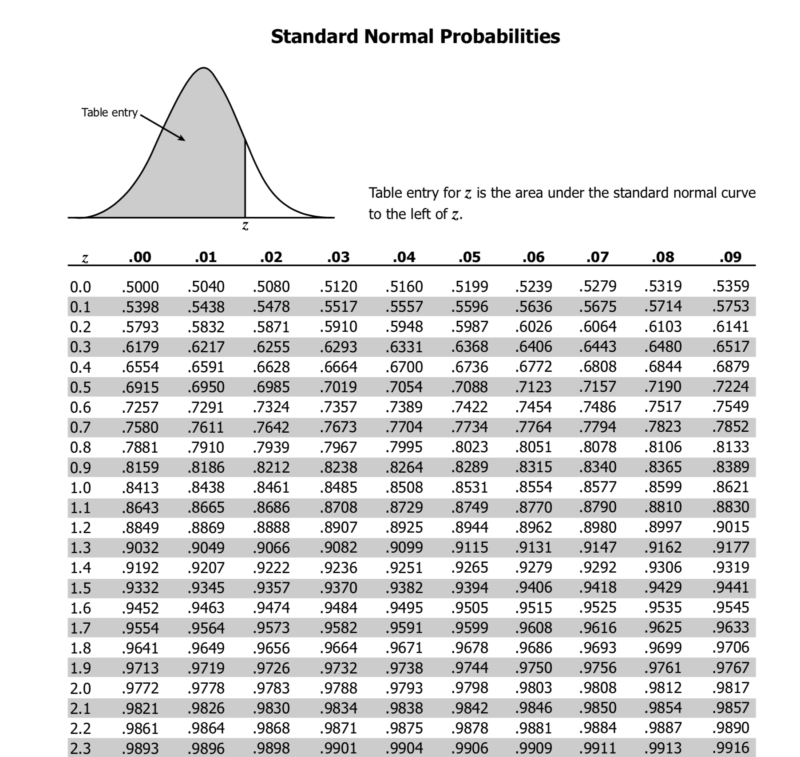
- We can check the area under the curve to the right or left of different z-scores by using the z-table
- In this case we see that the area to the right of 1.2 equals 1 - 0.8849, or 0.1151
- This implies that the probability of observing a sample IQ of 103 is .12
Ex 2 - Exams
Ex 2 - Exams
Assume that the test scores of a college entrance exam fits a normal distribution. Furthermore, the mean test score is 72, and the standard deviation is 15. What is the percentage of students scoring 84 or more in the exam?
- Calculate the z-score
- Check z-table
the normal distribution and the CLT…
they allow us to answer questions like this
and to do hypothesis testing.
Null hypothesis significance testing
NHST
In a trial, the
null hypothesis (H0)
is innocence.
The objective is to see if the evidence (the data) contradicts this hypothesis, supporting an alternative hypothesis (H1), guilt.
NHST
If there is no evidence,
the accused cannot be
found guilty.
We fail to reject H0
If there is evidence of guilt beyond a reasonable doubt, the accused is found guilty.
We reject H0
So what’s a p-value?
p-value: the probability of obtaining
your data, if H0 is TRUE.
…and “significant”?
Significance: obtaining a p-value below
an arbitrary threshold
High p-value: your data are likely with a true null.
Low p-value: your data are unlikely with a true null.What is power?
The probability of (correctly) rejecting
H0 when H1 is true.
Hypothesis testing in context
- We have a question. We want to know the truth™.
- Generally we compare sample distributions of population(s)
i.e., we want to know if a group is different from another
group with respect to something - In other words, we hypothesize something about a population or about the relationship between two populations
- What we hypothesize is considered an alternative to a null hypothesis
- Null hypothesis (H0): the difference between the populations = 0
- Alternative hypothesis (H1): the difference between the populations \(\neq\) 0
Reality
|
|||
|---|---|---|---|
| H0 is true | H0 is false | ||
| Decision | Fail to reject H0 | Correct | Type II error |
| Decision | Reject H0 | Type I error | Correct |
Hypothesis testing in context
- We have a question. We want to know the truth™.
- Generally we compare sample distributions of population(s)
i.e., we want to know if a group is different from another group with respect to something - In other words, we hypothesize something about a population or about the relationship between two populations
- What we hypothesize is considered an alternative to a null hypothesis
- Null hypothesis (H0): the difference between the populations = 0
- Alternative hypothesis (H1): the difference between the populations \(\neq\) 0
- We determine which statistical test is most appropriate according to the nature of our data
- Set alpha
- Conduct relevant test and…
- reject the null hypothesis (if there is sufficient evidence)
- fail to reject the null hypothesis
Which test do I use?
There are many…
The t-test
The basics
- Compares two sample distributions to determine if they are different
- What do we mean by ‘different’?
- We consider the sample distributions ‘different’ if the relationship between them is due to something other than random chance
- Normally we analyze the probability that a real relationship exists
- A t-test determines if the diference between two averages = 0
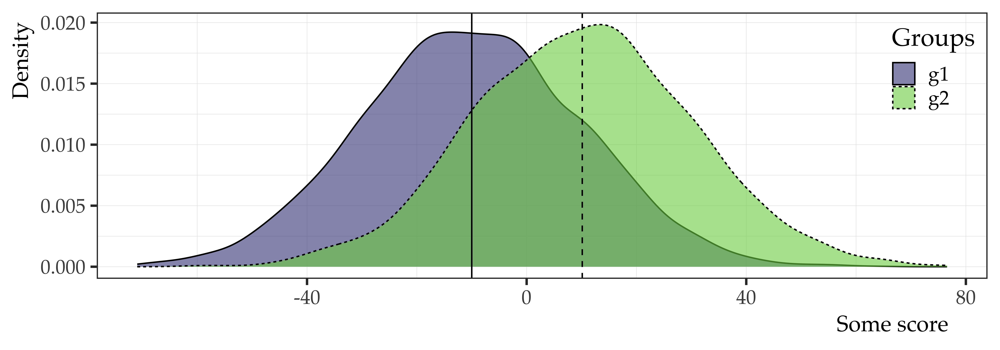
The basics
- There are several types of t-tests
- We are interested in two:
- independent samples
- paired samples
Independent samples
| name | group | score |
|---|---|---|
| Juan | g1 | 250 |
| Jorge | g1 | 340 |
| Jacobo | g2 | 460 |
| José | g2 | 200 |
Paired samples
| name | test1 | test2 |
|---|---|---|
| Miguel | 35 | 67 |
| Marta | 50 | 46 |
| Marisa | 90 | 86 |
| Marcos | 78 | 91 |
Ex. independent samples
| name | group | score |
|---|---|---|
| Juan | g1 | 250 |
| Jorge | g1 | 340 |
| Jacobo | g2 | 460 |
| José | g2 | 200 |
# A tibble: 1 × 3
g1 g2 diff
<dbl> <dbl> <dbl>
1 295 330 -35
Welch Two Sample t-test
data: score by group
t = -0.25442, df = 1.2363, p-value = 0.8349
alternative hypothesis: true difference in means between group g1 and group g2 is not equal to 0
95 percent confidence interval:
-1161.468 1091.468
sample estimates:
mean in group g1 mean in group g2
295 330 Ex. paired samples
| name | test1 | test2 |
|---|---|---|
| Miguel | 35 | 67 |
| Marta | 50 | 46 |
| Marisa | 90 | 86 |
| Marcos | 78 | 91 |
# A tibble: 1 × 3
test1 test2 diff
<dbl> <dbl> <dbl>
1 63.2 72.5 -9.25
Paired t-test
data: prd_samp$test1 and prd_samp$test2
t = -1.0785, df = 3, p-value = 0.3598
alternative hypothesis: true mean difference is not equal to 0
95 percent confidence interval:
-36.54539 18.04539
sample estimates:
mean difference
-9.25 References
Johnson, K. (2011). Fundamentals of quantitative analysis. In K. Johnson (Ed.), Quantitative methods in linguistics (pp. 1–33). Wiley.
Takahashi, S. (2009). The manga guide to statistics. Trend-Pro CO., LTD.
Wickham, H., & Grolemund, G. (2016). R for data science: Import, tidy, transform, visualize, and model data. O’Reilly Media.